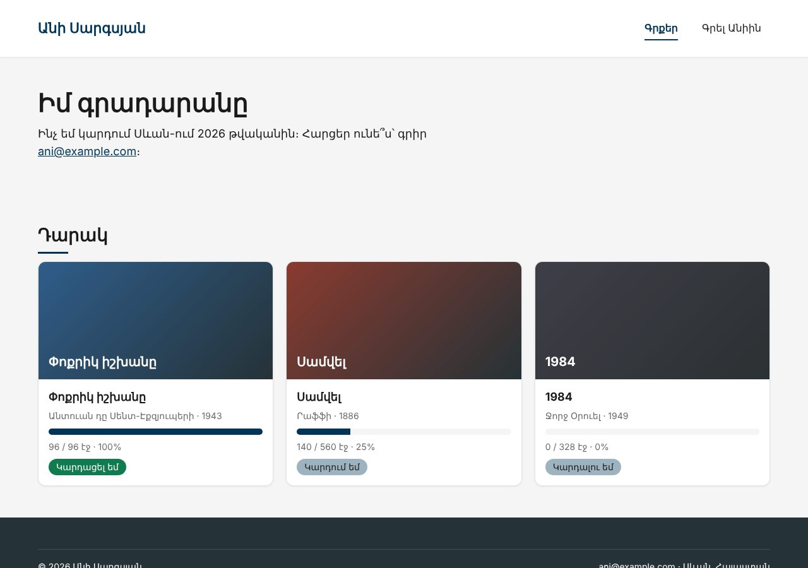
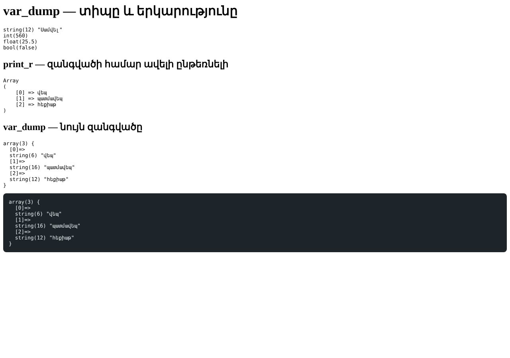

Տնային աշխատանք · PHP Դաս 01 · մինի-նախագիծ
Բլոկ 2-ում Անիի «Գրքեր» էջը աշխատում էր բրաուզերում։ Այս դասին այն տեղափոխվում է սերվեր․ index.html-ը դառնում է index.php, իսկ կրկնվող տեքստերը՝ փոփոխականներ։ Մինչև Դաս 22-ը այս կայքը կդառնա գրքերի ակումբ՝ բազայով, մուտքով և Laravel-ով։
Միայն Դաս 01-ը․ Laragon, php -S, <?php ?> և <?= ?>, փոփոխականներ, date(), var_dump, print_r, սխալների ցուցադրում։ Պայմաններ, ցիկլեր և զանգվածներ դեռ չկան։


Աշխատիր նոր թղթապանակում՝ www/ani-club/։ Starter-ը Անիի «Գրքեր» էջն է Բլոկ 2-ից։
starter/css/global.css — Բլոկ 1–2-ի ոճերըstarter/css/main.css — Բլոկ 1–2-ի ոճերըstarter/images/favicon.svg — faviconstarter/index.html — Անիի «Գրքեր» էջը Բլոկ 2-ից՝ առանց JS-ի (ստատիկ HTML)| Գործարկել |
|---|
php -S localhost:8000 |
www/-ում ստեղծիր ani-club/ և պատճենիր starter/-ի ֆայլերըhttp://ani-club.test, ապա նույնը php -S localhost:8000-ով (տնային 2)$siteName, $email, $city, $year<title>, logo, footer<?php
// Անիի գրքերը · PHP Դաս 01
// Բլոկ 2-ի pages/books.html-ը՝ վերանվանված index.php․ HTML-ը նույնն է, PHP-ն՝ միայն մի քանի տեղում
// Սխալների ցուցադրում — միայն զարգացման ժամանակ
ini_set('display_errors', 1);
ini_set('display_startup_errors', 1);
error_reporting(E_ALL);
$siteName = "Անի Սարգսյան";
$email = "ani@example.com";
$city = "Սևան";
$year = date("Y");
?>display_errors-ը միացված է; և կարդա հաղորդագրությունը․ ո՞ր տողն է նշում և ինչու հաջորդը (տնային 7)debug.php՝ չորս տիպի փոփոխական և dd() ֆունկցիաvar_dump-ը և print_r-ը զանգվածի վրա։ Ինչու՞ է "Սամվել"-ը string(12)function dd($data): void
{
echo "<pre style='background:#1e252a;color:#e8eced;padding:14px;border-radius:8px'>";
var_dump($data);
echo "</pre>";
die();
}index.php-ը բացվում է Laragon-ով և php -S-ովdate("Y"), ոչ ձեռքով գրվածdebug.php-ը ցույց է տալիս 4 տիպ| Սխալ | Ինչպես ուղղել |
|---|---|
Բրաուզերը ցույց է տալիս <?php տեքստը | Ֆայլը բացել ես կրկնակի սեղմումով (file://)։ PHP-ին սերվեր է պետք |
| Ներբեռնվում է index.php ֆայլը | Laragon-ը միացված չէ կամ թղթապանակը www/-ում չէ |
Undefined variable $siteName | Փոփոխականը սահմանված է ավելի ներքև, քան օգտագործվում է, կամ տառասխալ կա |
| Հայերենը «Õ...» է | Ֆայլը պահպանիր UTF-8 կոդավորմամբ, <meta charset="UTF-8">-ը տեղում է |
Սրանք Դաս 01-ի տնային աշխատանքի կետերն են։ «մինի-նախագծում» նշվածները արդեն կատարել ես վերևի քայլերում՝ Անիի ակումբում։ Մնացածը կատարիր ՏեխնոՄարկետում, ինչպես գրված է դասում։
php -S և Laragon։ Գրիր, ի՞նչ տարբերություն նկատեցիր։www-ի մեջ և բաց արա .test հասցեով։index.html → index.php։ Համոզվիր, որ ամեն ինչ աշխատում է։ մինի-նախագծում;) և նկարագրիր հաղորդագրությունը։ մինի-նախագծումdd() ֆունկցիան և փորձարկիր այն 4 տարբեր տիպի վրա։ մինի-նախագծումvar_dump-ը և print_r-ը զանգվածի վրա։ Ո՞րն է ավելի հարմար և ե՞րբ։ մինի-նախագծումԵրբ բաժին 03-ի բոլոր կետերը նշված են, բացիր օրինակը։ Գտիր մեկ բան, որ դու արել ես այլ կերպ, և մտածիր՝ որն է ավելի հասկանալի և ինչու։ Քո լուծումը կարող է տարբերվել և լինել ճիշտ։